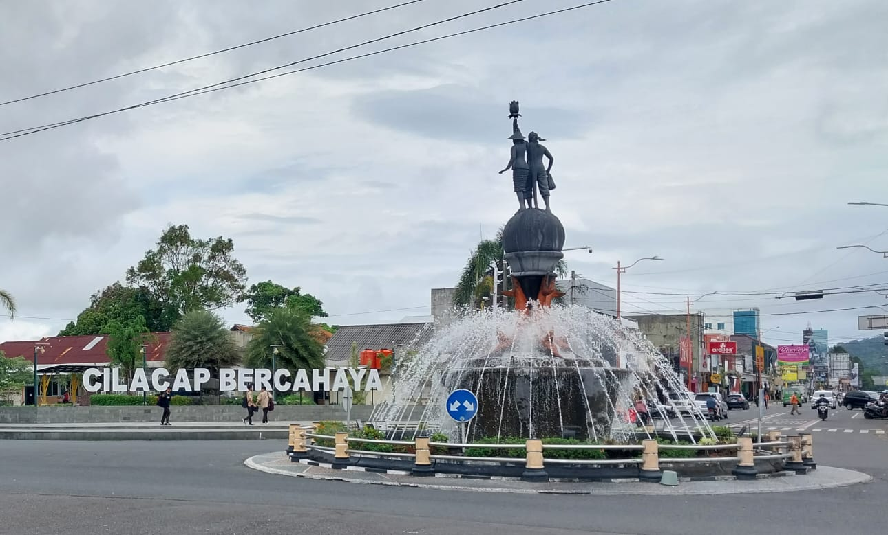
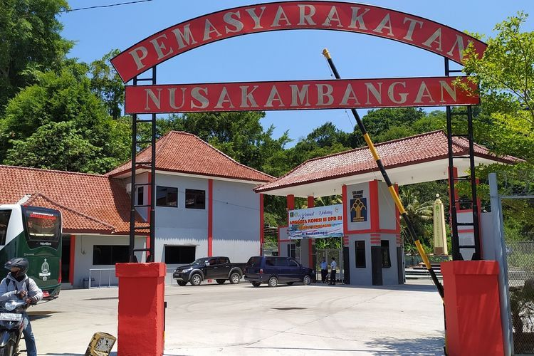
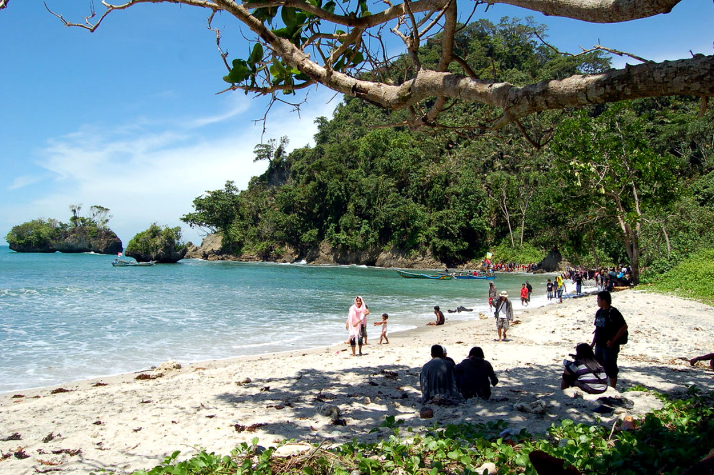
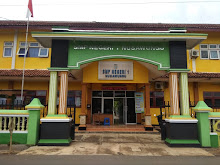
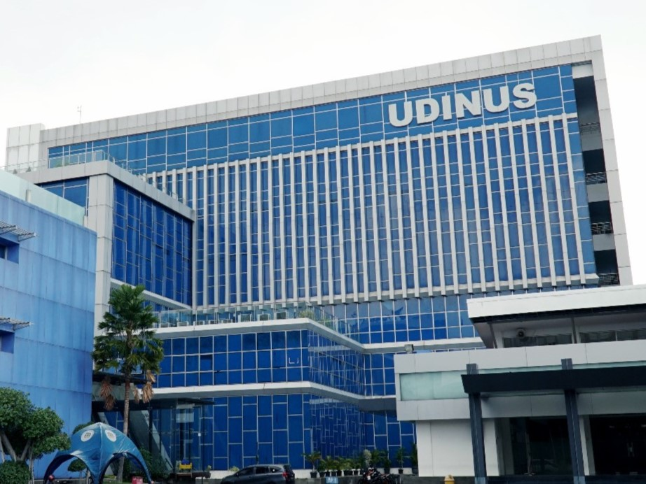
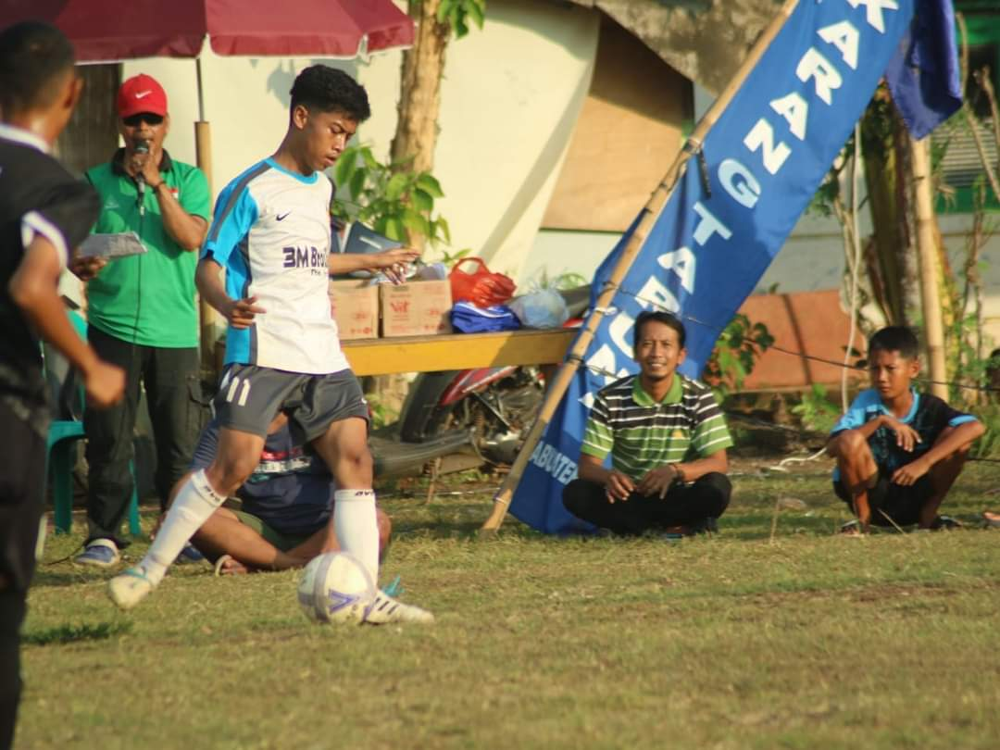
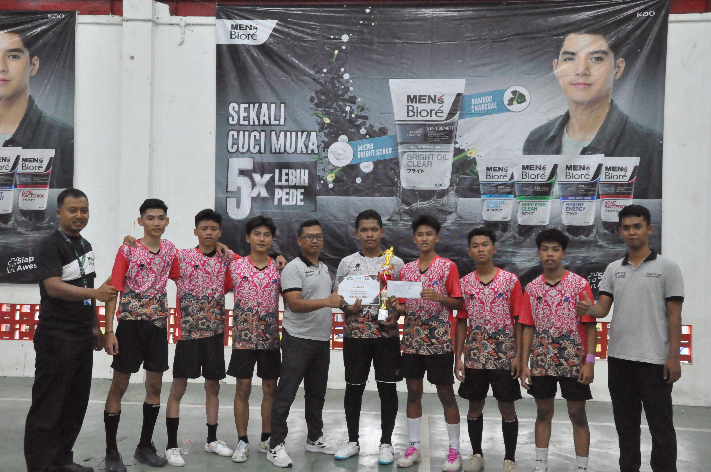
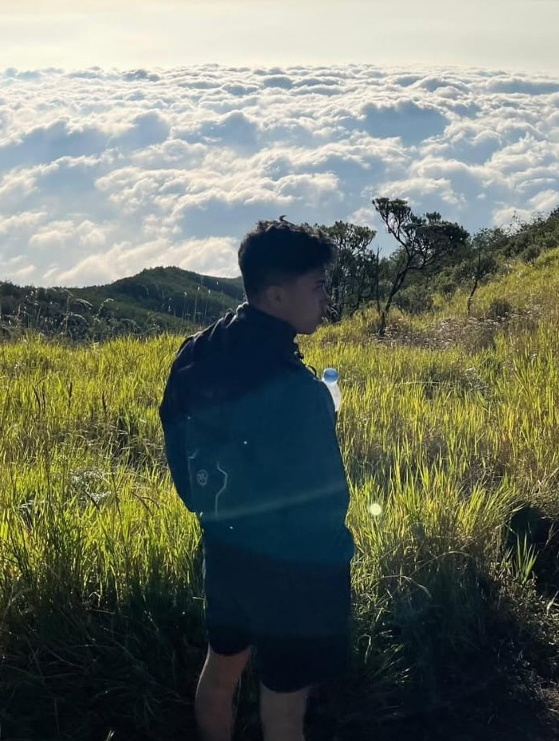

Profil Kota Kelahiran
Kabupaten Cilacap adalah sebuah kabupaten di Provinsi Jawa Tengah, Indonesia. Ibu kotanya adalah Kota Cilacap. Kabupaten ini terletak di bagian paling selatan Pulau Jawa. Kabupaten Cilacap memiliki luas
wilayah 2.668,51 km² dengan jumlah penduduk 1.915.030 jiwa (2020). Kabupaten Cilacap berbatasan dengan Samudra Hindia di sebelah selatan, Kabupaten Kebumen di sebelah barat, Kabupaten Banyumas di sebelah utara,
dan Kabupaten Purbalingga serta Kabupaten Banjarnegara di sebelah timur. Kabupaten Cilacap terdiri atas 24 kecamatan, 268 desa, dan 18 kelurahan. Kota Cilacap merupakan kota terbesar di pesisir selatan Pulau Jawa dan
merupakan kota terbesar keempat di Provinsi Jawa Tengah setelah Kota Semarang, Kota Surakarta, dan Kota Tegal.

Informasi detail tentang Kabupaten Cilacap:
Klik Disini
Kembali
Galeri Kota Kelahiran
| Alun-Alun Cilacap | Lapas Nusakambangan | Pantai Pasir Putih Cilacap |
|---|---|---|
 |
 |  |
Pendidikan
Perjalanan pendidikan dimulai dari TK Al-Fallah Danasri selama 1 tahun. Selanjutnya melanjutkan pendidikan ke SD Negeri 002 Danasri
selama 6 tahun. Lalu melanjutkan pendidikan ke SMP Negeri 01 Nusawungu selama 3 tahun. Kemudian melanjutkan pendidikan ke SMK Telkom Sandhy Putra Purwokerto
Batam selama 3 tahun. Dan sekarang melanjutkan pendidikan ke Perguruan Tinggi di Universitas Dian Nuswantoro Semarang Jurusan Sistem Informasi.
| SMP Negeri 01 Nusawungu | SMK Telkom Sandhy Putra Purwokerto | Universitas Dian Nuswantoro |
|---|---|---|
|  |  |
 |
Website Resmi Pendidikan:
SMP Negeri 01 Nusawungu
SMK Telkom Sandhy Putra Purwokerto
Universitas Dian Nuswantoro
Kembali
Karir
Tentang karir saya adalah saya telah menyelesaikan Pelatihan Kerja Khusus ( PKL ) di PT. Satria Digital Media pada tahun 2023. Saya sudah pernah mengikuti kegiatan Praktek Kerja Lapangan (PKL) di kelas XI selama 6 bulan . Pada saat saya mengikuti Praktek Kerja Industri saya belajar banyak tentang dunia pekerjaan dan juga saya dapat mempelajari tugas yang diberikan oleh perusahaan. Saya memiliki pribadi yang bersungguh-sungguh melakukan apapun yang ditugaskan kepada diri saya, juga dapat berkomunikasi dengan lancar dan baik dengan sesama rekan kerja, dengan menerapkan sikap sopan santun.
Saya memiliki Pengalaman Kerja Magang di PT. Satria Digital Media Pop Tambak, Banyumas, Jawa Tengah. Pada saat itu saya mengikuti program sekolah yaitu Praktek Kerja Lapangan ( PKL ) selama 6 bulan.
PT. Satria Digital Media memberikan tugas kepada saya di bidang Teknisi Jaringan dengan berfokus kepada Instalasi Jaringan, Monitoring Jaringan, Troubleshooting dan System Administrasi.
Selain itu saya juga belajar tentang Instalasi Jaringan pada pelanggan menggunakan Fiber Optic dan Arsitektur Jaringan FTTH yaitu , OLT, ODP, dan Feeders Cable dan Pembuatan Database Perusahaan.
Informasi lengkap tentang PT. Satria Digital Media: Klik Disini
Kembali ke atas
Keahlian
- Menguasai Microsoft Office 360
- Menguasai Tentang Jaringan Komputer dan Konfigurasi
- Pernah membuat Server aaPanel
- Pernah membuat Web Wordpress
- Pernah Deploy Web Application dengan NGINX
| Web Wordpress Idil | Server aaPanel | Deploy Web Application with NGINX |
|---|---|---|
 |
 |
 |
Kembali ke atas
Hobi
- Sepak Bola
- Berenang
- Futsal
- Naik Gunung
- Game
| Sepak Bola | Futsal | Naik Gunung |
|---|---|---|
|  |  |  |
Kembali ke atas